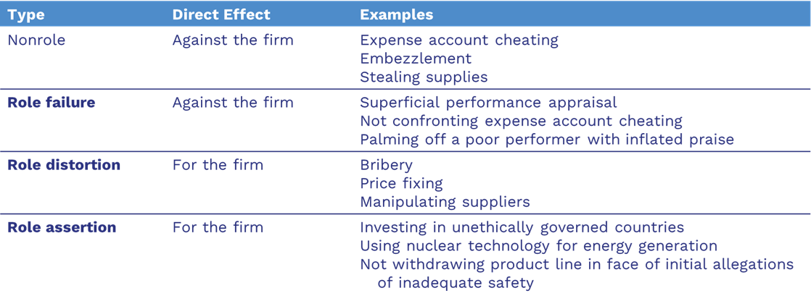
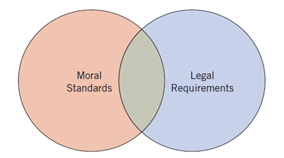

September 2, 2026
[Entrepreneurship] is so mysterious that we cannot see it or touch it; yet we can feel it and know it exists. It cannot be mined, manufactured, or bought; yet it can be discovered.
Textbook Reading (Quiz Basis)
Chapter 2. The Entrepreneurial Mindset in Individuals: Cognition, the Dark Side, and Ethics
Why I chose this textbook: The chapters in this book focus on learning the discipline of entrepreneurship.
Lecture Agenda
Source: Kuratko (2024)
Impossible Foods’ valuation has fluctuated, but recent sources suggest a valuation between $2 billion and $7 billion, primarily due to its last funding round in November 2021, which valued it at roughly $7 billion. While an earlier valuation was around $10 billion, the company’s valuation has declined, with some sources placing it around $2 billion by 2023, reflecting industry challenges and shifts in consumer behavior.
Perhaps.
This chapter takes a more psychological look at entrepreneurs and the entrepreneurial cognition.
Research is still needed to determine whether differences are attributable to a cognitive difference or originates from idiosyncratic factors or from the experience of being entrepreneurs.
Let’s break down a few key concepts to understand the entrepreneurial mindset…
To understand how entrepreneurship emerges, let’s examine the science of cognition.
Definition: Cognition
Mental functions, mental processes (thoughts), and mental states of intelligent humans—attention, remembering, producing and understanding language, solving problems, and making decisions.
Definition: Entrepreneurial Cognition
Knowledge structures that people use to make assessments, judgments, or decisions involving opportunity evaluation, venture creation, and growth.
A foundation of entrepreneurial thinking is their ability to adapt.
Definition: Adaptibility
The ability to be dynamic, flexible, and self-regulating in one’s cognitions given dynamic and uncertain task environments.
Metacognition is the model used to describe the process an entrepreneur will use to frame the entrepreneurial task.
Definition: Metacognitive Model
Study of the higher-order cognitive process that resulted in the entrepreneur framing a task effectually, and thus why and how a particular strategy was included in a set of alternative responses to the decision task (metacognition).
They are optimistic, hard-driving, committed individuals who derive great satisfaction from being independent.
They are driven by an intense commitment and determined perseverance.
They use failure as a tool for learning.
They have confidence to believe that they personally can make a difference in final outcomes.
They have have a tolerance for failure. This involves a capacity–often learned–to deal with failure and process grief.
Definition: Loss Orientation
Involves focusing on the particular loss to construct an account that explains why the loss occurred.
Definition: Restoration Orientation
Involves both distracting oneself from thinking about the failure event and being proactive toward secondary causes of stress.
An individual sees the opportunity \(\rightarrow\) creates the venture \(\rightarrow\) and the entrepreneur emerges.
Researchers have identified a wide range of entrepreneurial characteristics, many of which can be grouped into a smaller set of core traits.
Table 2.1 Characteristics Often Attributed to Entrepreneurs
| Characteristic |
|---|
| Ability to get along well with people |
| Ability to influence others |
| Ability to learn from mistakes |
| Ability to make decisions quickly |
| Ability to take calculated risks |
| Ability to trust workers |
| Accuracy, thoroughness |
| Aggressiveness |
| Capacity for enjoyment |
| Commitment |
| Confidence |
| Cooperativeness |
| Courage |
| Creativity |
| Dynamism, leadership |
| Efficacy |
| Egotism |
| Energy, diligence |
| Flexibility |
| Foresight |
| Honesty, integrity |
| Imagination |
| Independence |
| Initiative |
| Intelligence |
| Maturity, balance |
| Need to achieve |
| Optimism |
| Orientation to clear goals |
| Perceptiveness |
| Perseverance, determination |
| Pleasant personality |
| Positive response to challenges |
| Sense of power |
| Profit orientation |
| Resourcefulness |
| Responsiveness to suggestions/criticism |
| Responsibility |
| Sensitivity to others |
| Time competence, efficiency |
| Toleration for ambiguity |
| Versatility |
Source: John A. Hornaday, “Research about Living Entrepreneurs,” in Encyclopedia of Entrepreneurship, ed. Calvin Kent, Donald Sexton, and Karl Vesper (Englewood Cliffs, NJ: Prentice Hall, 1982), 26–27. Adapted by permission of Prentice Hall, Englewood Cliffs, NJ.
Each row in the table below represents a characteristic you’ll encounter and practice over the course of the semester.
This semester, you will develop your personal E-IDP to see how these traits connect to your personal development plan.
As you progress this semester, use these traits as a lens for reflection—how you work is as important as what you produce.
Entrepreneurial Characteristics for E-IDP
| Characteristic | Description |
|---|---|
| Calculated Risk Taking | Makes strategic, informed decisions about when to take a risk, not reckless. |
| Communication | Effectively conveys ideas and actively listens in professional settings |
| Creativity and Innovativeness | Generates original ideas and sees possibilities others may not. |
| Determination and Perseverance | Total dedication to success, overcoming obstacles and setbacks, unwavering commitment to succeed. |
| Drive to Achieve | A strong desire to compete, to excel against self-imposed standards, to pursue challenging goals. |
| Entrepreneurial Coachability | Seeks, integrates, and learns from failures, setbacks, or feedback to grow. |
| Entrepreneurial Hustle | Acts with urgency and creativity to solve immediate problems. |
| High Energy Level | Demonstrates consistent drive and enthusiasm to sustain effort over time. |
| Opportunity Orientation | Focuses on opportunity rather than resources; always scanning for possibilities. |
| Passion | Demonstrates deep emotional investment in the work. |
| Persistent Problem Solving | Tackles tough problems with a methodical, realistic approach; doesn’t quit easily. |
| Personal Agency (Internal Locus of Control) | Believes success comes from personal responsibility and effort, not luck. |
| Seeking Feedback | Actively looks for input to improve performance; learns from critique. |
| Team Building | Builds strong, motivated teams; values others’ strengths. |
| Tolerance for Ambiguity | Comfortable operating under uncertainty or limited structure. |
| Vision | Has a clear sense of purpose or long-term direction. |
Source: Kuratko, D. F. (2023). Entrepreneurship: Theory, Process, and Practice (12th ed.). Cengage Learning.
According to the theory of entrepreneurship, entrepreneurs cause entrepreneurship.
Entrepreneurship is a function of the entrepreneur:
\(E = f(e)\)
Entrepreneurship (\(E\)) results from the interaction (\(f\)) of skills (\(e\)) such as inner control, planning and goal setting, risk taking, innovation, reality perception, use of feedback, decision making, human relations, and independence.
Takeaway: These skills and characteristics are learnable and developable with practice.
Goal: Identify which entrepreneurial characteristics you value most and why.
Step 1 – Individual Ranking (5 minutes)
Review the list of 16 most often cited entrepreneurial characteristics
Choose the five you believe are most important for entrepreneurial success.
Rank them from 1 (most important) to 5 (fifth most important).
For each, jot down a quick example of why you ranked it where you did—this can be from your own experience, a well-known entrepreneur, or a fictional example.
Step 2 – Small-Group Discussion (5 minutes)
Share your top five with your group.
Note where you agree and where you differ.
Discuss why certain traits might matter more in some industries or stages of a business than others.
Step 3 – Class Debrief (5 minutes)
As a class, identify which characteristics appeared most often in top-five lists.
Highlight any that appeared rarely—discuss whether they’re under-valued or simply more situational.
When we think of entrepreneurs, we often picture innovation, independence, and financial success.
But behind the highlight reel, entrepreneurship also brings:
High personal and financial stakes
Constant uncertainty
Pressure to perform without a safety net
This section looks at the risks, pressures, and stresses that can come with building and running a venture.
When someone becomes an entrepreneur, they’re not just chasing potential rewards, they’re also facing different kinds of personal risk, and how they handle each can vary.
Entrepreneurs-like many of us-experience stress and it can come in various forms:
Definition: Entrepreneurial Stress
The extent to which entrepreneurs’ work demands and expectations exceed their abilities to perform as venture initiators, they are likely to experience stress.
Step 1 – Individual Reflection (3 minutes)
Read each statement below and mark the column that most appropriately represents your level of agreement.
| Statement | Strongly Disagree (1) | Disagree (2) | Neither Disagree Nor Agree (3) | Agree (4) | Strongly Agree (5) |
|---|---|---|---|---|---|
| I often feel a severe sense of time urgency. | |||||
| I find myself constantly involved in multiple projects subject to deadlines. | |||||
| I often neglect of all aspects of life except work. | |||||
| I have a tendency to take on excessive responsibility, combined with the feeling that “Only I am capable of taking care of this matter.” | |||||
| I have a tendency to speak faster than most people. |
Add up your scores.
The higher your score, the stronger your “Type A” tendencies, which can increase entrepreneurial stress.
Step 2 – Small-Group Discussion (5 minutes)
In groups of 2–3, discuss:
Which statements resonated most with you?
Do you see any signs of stress or burnout risk in your answers?
How might these tendencies both help and hurt an entrepreneur?
Step 3 – Coping Strategies Brainstorm (3 minutes)
As a group, list at least three concrete strategies for reducing entrepreneurial stress. These can be personal habits, business practices, or support systems. Some examples:
Networking with other entrepreneurs
Taking regular breaks or “getting away from it all”
Open communication with employees or partners
Finding satisfaction outside the company (hobbies, volunteering)
Delegating work
Exercising regularly
Speaking with a professional therapist or coach
Getting high-quality sleep
Step 4 – Full-Class Debrief (5 minutes)
Each group shares:
One Type A tendency that is both a strength and a risk.
One practical strategy for managing entrepreneurial stress.
We’ll compile these so everyone leaves with a shared list of ideas.
Instructions: Read each scenario and choose the option you feel is most ethical.
Your new business is struggling. A supplier offers to “adjust” the invoice so it looks like you spent more than you did, which would increase your tax deduction.
A. Accept – it’s a harmless way to save money
B. Decline – it’s dishonest and could cause trouble
C. Not sure
Instructions: Read each scenario and choose the option you feel is most ethical.
You’re hiring your first employee. Your best friend needs work, but another candidate is more qualified.
A. Hire your friend – loyalty comes first
B. Hire the more qualified candidate – business comes first
C. It depends
Instructions: Read each scenario and choose the option you feel is most ethical.
At a networking event, a competitor shares confidential information by mistake.
A. Use it to get ahead – it’s their error
B. Ignore it – it’s not yours to use
C. Not sure
Which questions were easy for you to answer? Which were harder?
Did you notice any rationalizations creeping into your thinking?
How do personal values and business pressures shape different answers?
Entrepreneurs face pressure from many directions, e.g., investors, customers, employees, regulators, each with their own expectations.
Aside from changes in societal values and norms, business owners must also navigate legal requirements.
Takeaway: Having clear parameters or a decision-making process for ambiguous situations helps prevent poor choices under pressure.
Ethics = basic rules or parameters for conducting any activity in an “acceptable” manner.
A set of principles that define what is considered good and right, or bad and wrong.
In entrepreneurship, it’s less about memorizing fixed rules and more about developing an ethical decision-making process you can apply in new situations.
Questionable conduct is often justified by believing that the activity:
Is not really illegal or immoral.
Is in the individual’s or the firm’s best interest.
Will never be found out.
Helps the company, so the company will condone it.
This table shows different types of unethical or problematic behavior in organizations, grouped by their type, the direct effect (whether it hurts or helps the firm in the short run), and some examples.

Source: James A. Waters and Frederick Bird, “Attending to Ethics in Management,” Journal of Business Ethics 5 (1989): 494.
Columns
Type – The category of misconduct.
Direct Effect – Whether the misconduct directly works against the firm (hurts it) or for the firm (benefits it, at least in the short term).
Examples – Specific illustrations of that type of misconduct.
Rows
Nonrole (Against the firm): Employees act outside their role in ways that harm the company. Examples: cheating on expense accounts, embezzling money, stealing supplies.
Role failure (Against the firm): Employees fail to fulfill their role responsibilities, indirectly harming the company. Examples: giving superficial performance reviews, ignoring misconduct, covering up poor performance.
Role distortion (For the firm): Employees misuse their role to benefit the firm (though often illegally or unethically). Examples: bribery, price fixing, manipulating suppliers.
Role assertion (For the firm): Employees push the firm’s interests in ways that may be legal but ethically questionable. Examples: investing in unethical regimes, using nuclear tech for energy, refusing to recall unsafe products early on.
There can be a large gap between what is legal and what is moral.
Not all legal actions are ethical, and not all ethical actions are legal.
The Matter of Morality
Greed
Separating personal from work behavior
Lack of ethical foundation
“Bottom-line” survival thinking
Over-reliance on other institutions to set standards
The Complexity of Ethical Decisions
Extended consequences
Multiple alternatives
Mixed outcomes
Uncertain ethical consequences
Personal implications
Ethical Codes of Conduct:
Written statements of ethical practices or guidelines
Increasingly common and more comprehensive in scope
Easier to implement with clear administrative procedures
Support both legal compliance and public trust
Why high ethical standards matter:
Unethical practices damage both the firm and the broader free-market system
Strong moral climate helps restore and maintain public trust
An entrepreneur’s values shape the organization’s ethics
A code of ethics sets expectations for:
Ethical decision-making by leadership
Employee behavior
Clear rewards and consequences tied to ethical conduct
Definition: Motivation
The drive to start and sustain a venture, shaped by personal traits, environment, goals, and a viable business idea.
Definition: Persistence
Continuing to pursue an opportunity despite setbacks or attractive alternatives.